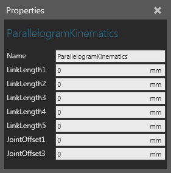

A Parallelogram Kinematics behavior calculates the forward and inverse kinematics of a Robot Controller used for palletizing operations in which the wrist orientation is always pointing downward.

If you want to use Parallelogram Kinematics with ordinary articulated robots, set LinkLength4 to zero and include the entire distance from the center of axis 3 to the center of the wrist in LinkLength3. In this case, the geometry of the fourth joint may move by the value of LinkLength4. To compensate for that effect, consider moving the actual geometry.
| Name | Description |
| Name | Defines the name of the kinematics. |
| LinkLength1 to LinkLength5 | Defines the length of each joint in the Robot Controller.
LinkLength1 LinkLength2 LinkLength3 LinkLength4 LinkLength5 |
| JointOffset1 | Defines the distance from the center of axis 1 to the center of axis 2 in the X-axis. |
| JointOffset3 | Defines the distance from the center of axis 3 to the center of the robot's wrist in the Z-axis. In some cases, JointOffset3 is set to zero. |